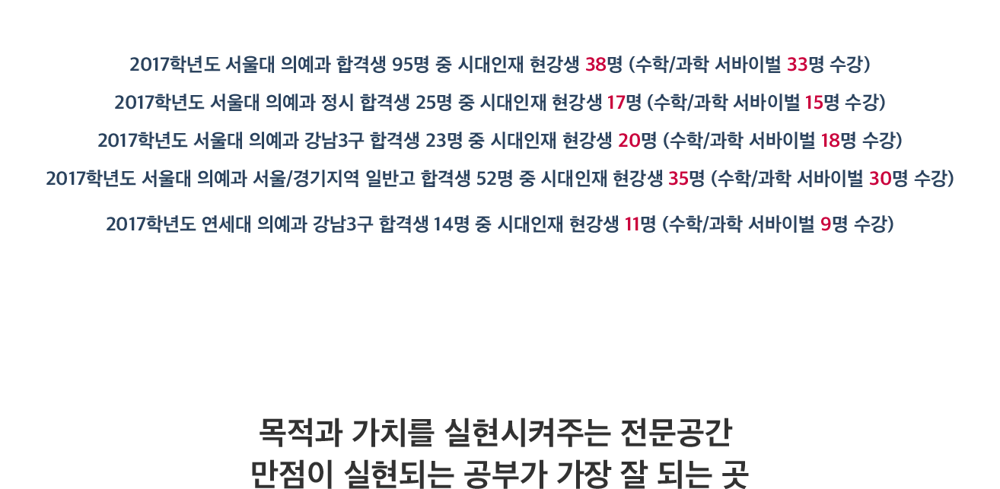
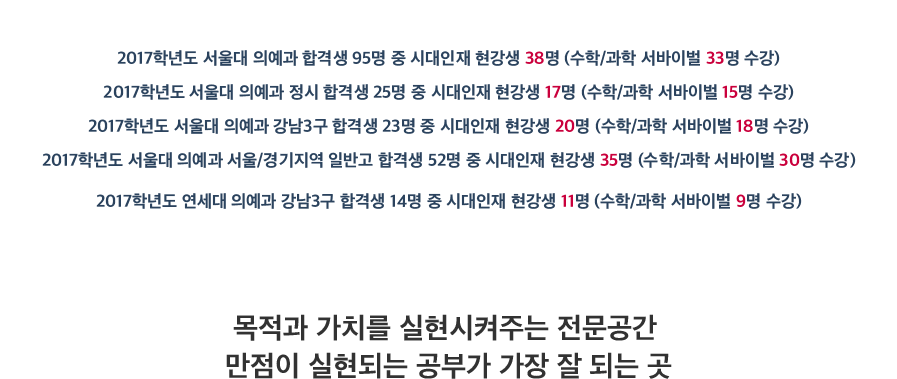

The Master Key Success
다음
system1 강사진 및 커리큘럼 만점을 실현시켜주는 시대인재 수능 전문가 자세히보기
system2 부엉이 라이브러리 수업시간을 제외한 모든 시간을 위한 공부공간 자세히보기
system3 만점감각 실전모의평가 재종반 전용 서바이벌 모의고사 수능시험장과 동일한 환경에서 실시 자세히보기
이전
다음
 
지원자격 자세히보기
상담/접수처 자세히보기
가이드북 다운 자세히보기
다음